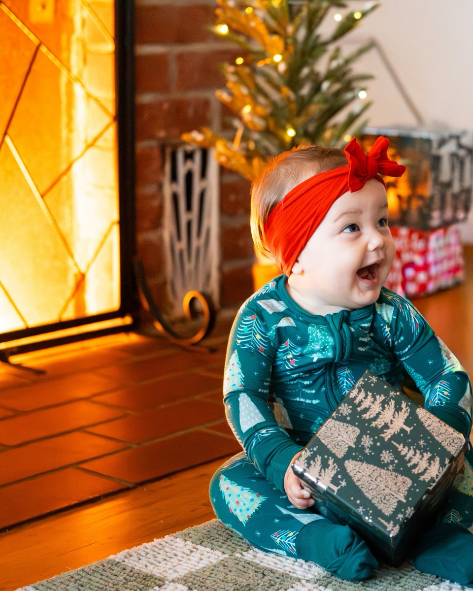
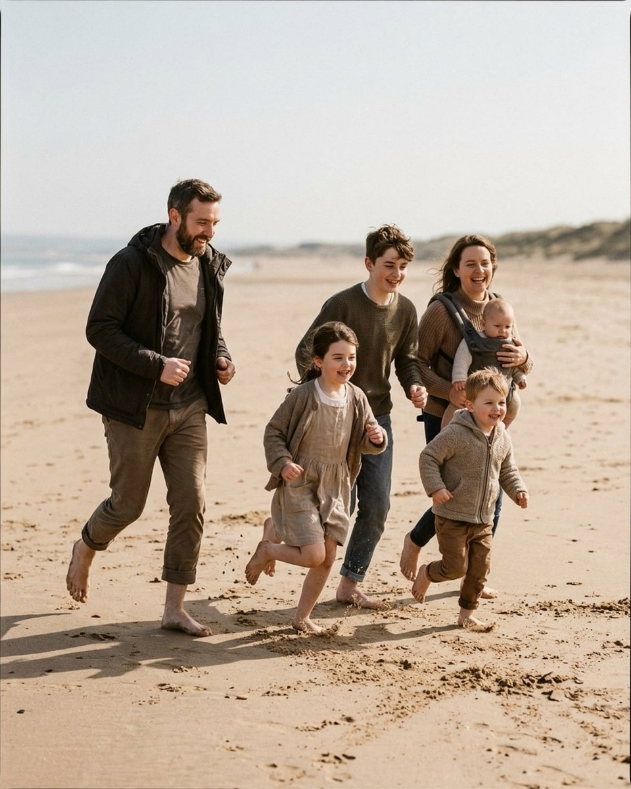
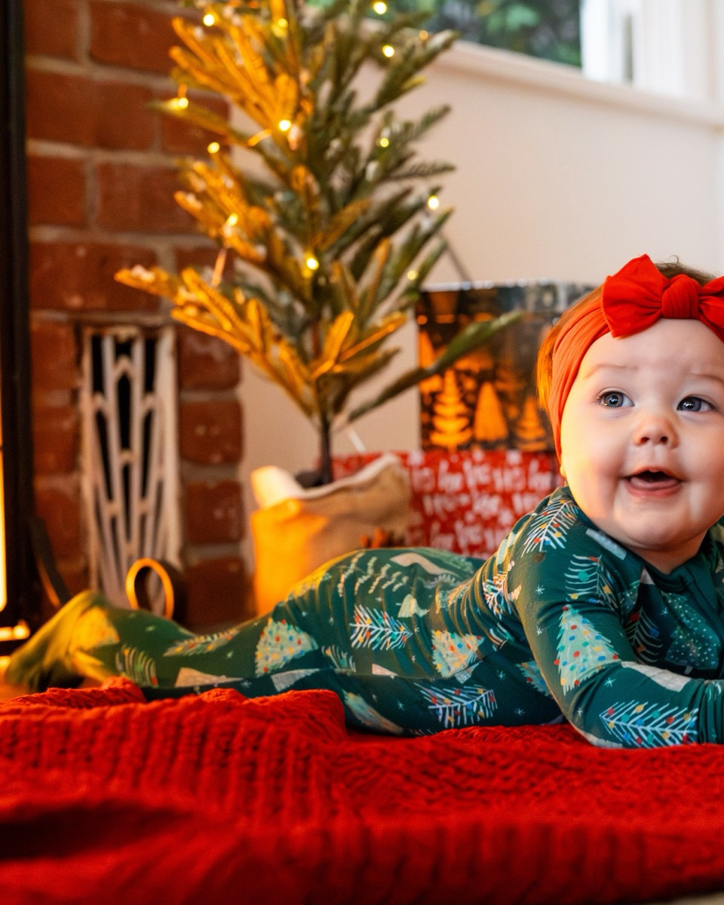

Directing kids without bribing them
A bribe buys one forced smile and costs you the rest of the session. A job, a game, or something to hold works better — here are 20 verbatim lines from the Prompted catalog for exactly that.
Bribing a kid works exactly once. Promise a cookie and you'll get one frame of forced enthusiasm before the negotiating starts — how many cookies, what flavor, can a sibling have one too, is this the last photo now. A reward buys compliance, not a real expression, and it costs you the rest of the session because now every kid in the group knows the camera is a vending machine. The better move is to give a child something to actually do. Kids are wired to take a task seriously — hold this, find that, watch the dog, count to three — and a task-focused kid forgets the lens is even there. That's the whole trick behind directing children in family portraits: stop asking for a face and start assigning a job — it's the same instinct behind getting natural smiles out of a whole family, just aimed specifically at the kids. Below are prompts pulled straight from the Prompted catalog that do exactly that, organized by the kind of stuck moment they solve. A few of the reference images are AI-generated poses rather than real client photos — you can tell which from the caption, and if you have real client work that would make a better reference, the contribute page explains how to add it.

Give them a job
The simplest fix for a bored or camera-shy kid is a task with a clear finish line. "Hold this," "watch that," "find the other one" — these give a wandering attention span somewhere specific to land, and the concentration on their face while they do it reads far better than a coached smile ever would.
Kids, bury Dad's feet. Dad, act like you haven't noticed.
PlayfulFrom the pose “Piggyback parade”
Best on a beach or anywhere there's sand or leaves to actually dig into. Give the kids a real, physical job and let Dad's exaggerated obliviousness carry the joke.

Let her hold the box and take her time exploring the paper.
CalmFrom the pose “Gift box solo sit”
Use with a toddler who's fidgety but not yet upset. A prop gives small hands something productive to do instead of asking for stillness they can't hold.
Everyone point at the person most likely to steal dessert.
PlayfulFrom the pose “Toddler toss”
Works well with school-age kids who've already rolled their eyes at "smile." The job is small and specific — point at someone — and the inside joke does the rest.
Thumb war tournament. I'll photograph the drama.
PlayfulFrom the pose “Lift the littlest”
A reliable filler when you have two kids standing around with nothing to do while you set up the next shot. The competition holds their attention better than any instruction could.
The dog is in charge now. Everyone watch the dog.
Nervous clientFrom the pose “Shoulder ride”
Use it the moment a family dog wanders into frame. Giving the kids a job — watch the dog — is often the fastest way to get a whole group looking the same direction at once.
Make the parents the game
Sometimes the fastest way to a real kid reaction isn't to talk to the kid at all — it's to hand the parent a small, slightly ridiculous assignment and let the child's genuine response to it become the picture. This works especially well with babies and toddlers too young to take direction themselves; the job goes to whoever's holding them.
Give her a little airplane lift and make your absolute best funny noise.
PlayfulFrom the pose “Mantel overhead lift”
Use with infants and young toddlers when you want a big, open laugh instead of a polite smile. The sound matters more than the lift — coach the parent to fully commit to it.

Dad, give me your best funny face or sound on the count of three. One, two, three!
PlayfulFrom the pose “Between shoulders giggle”
Use when a toddler is sandwiched between both parents and starting to look bored. Counting down out loud gives a self-conscious parent permission to actually go for it instead of half-trying.
Nuzzle your nose right into her cheek and make a little silly sound.
PlayfulFrom the pose “Hip cradle gaze”
A dependable move for a baby who's alert but not yet smiling on cue. It gives the parent something concrete to do with their face instead of just staring hopefully at their child.
Parents kiss. Kids, say ewww as loud as legally allowed.
PlayfulFrom the pose “Parents kiss kids react”
A strong closer for families with school-age kids who find parental affection mortifying. Their disgust reads as pure, unposed delight on camera, and it barely needs a second take.
Whoever laughs first has to do the dishes tonight.
PlayfulFrom the pose “Couch pile”
Use once a family is already piled together and getting antsy. Framing stillness as a contest — first to laugh loses — nearly guarantees somebody breaks within a few seconds.
Everyone jump on three — Dad, you especially.
PlayfulFrom the pose “Shoulder ride”
Naming a specific parent by role signals you're serious about them participating, not just the kids. It's a good energy reset when a group has gone flat mid-session.
Want the fall mini session shot list?
About 25 poses grouped by family size, each with the words to say. Free PDF.
One email to confirm, one with the PDF. Unsubscribe any time.
The toddler who won't stay
A toddler who won't hold a spot isn't misbehaving — they're doing exactly what toddlers do. Fighting that is a losing game. The prompts that work best here stop asking a moving child to be still and instead build the motion into the shot, or hand the adults a job that keeps the child moving in a useful direction.

The kids don't have to sit still. Chase them. I'll keep up.
Nervous clientFrom the pose “Story time circle forest”
Say this early to a parent who's apologizing for a toddler who won't sit for a story pose. It reframes the chase itself as the plan, not a failure of the plan.
Just walk. Kids wander. That's the picture.
Nervous clientFrom the pose “Tickle pile”
Use when a toddler keeps drifting out of a pose you're trying to hold. Naming the wandering as the point, out loud, takes the pressure off everyone to corral them.
Walk slow, hold hands, let the kids set the pace.
CalmFrom the pose “Toddler toss”
Good for a toddler mid-meltdown recovery who needs to move at their own speed. Letting them set the pace usually settles them faster than any instruction to slow down would.
Ring around the parents — nobody falls down until I say.
PlayfulFrom the pose “Everyone look at baby”
Turns a toddler's need to circle and move into a structured game with a rule they can actually follow. The anticipation of "falling down" usually produces real laughter, not performed giggles.
Race to that tree and back. Parents, you're allowed to lose.
PlayfulFrom the pose “Stair stack”
A good release valve when a toddler has burned off their patience for posed shots but still has energy to spare. Let the movement happen and shoot the return.
The kid who's done
Every family session hits a point where a child's patience simply runs out — a missed nap, a meltdown two poses ago, or just the accumulated weight of being told what to do for forty-five minutes. These prompts aren't tricks to squeeze out one more good frame; they're permission, said out loud, that the schedule bends to the kid, not the other way around.
If the toddler melts down, we roll with it. Meltdowns are ten percent of my portfolio.
Nervous clientFrom the pose “Stair stack”
Say this early if you can see a toddler is close to done. It removes the pressure on parents to manage the child's mood for your benefit, which paradoxically buys you more good minutes.
If someone cries, we take a snack break. That includes the adults.
Nervous clientFrom the pose “Everyone look at baby”
Use it as a standing rule you state at the start of a session with young kids. Naming a built-in exit ramp lowers everyone's anxiety about the moment it might be needed.
We'll get one photo where everyone smiles at me for Grandma. Then we play. Deal?
Nervous clientFrom the pose “Blanket fort peek”
A useful trade when a kid is refusing to engage with anything posed. Naming the exact ask — one photo — and the reward — play — gives them a finish line they can see.

Take all the time you need to settle her in. We work entirely on her schedule.
Nervous clientFrom the pose “Hearth tummy time”
Use it as a literal closing line when a baby is fussy and the parents are apologizing for it. It tells them, out loud, that there's no clock running against them.
Sequencing the words
These groups aren't random — they roughly track the shape of a real session. Open with a job or a game while everyone's fresh; that's when a kid has the most patience to actually engage with an assignment instead of ignoring it. Save the parent-as-punchline lines for the middle, once the family's warmed up enough to be silly on cue, the same way a couple needs to loosen up before natural smiles show up on their own. Keep the wandering-toddler prompts in your back pocket for whenever a toddler is in the group, because that moment arrives whether you scheduled for it or not. And always have a "we work on her schedule" line ready for the end, because every session eventually meets a kid who's simply done — the same way a bigger family group eventually meets a limit on how long it'll hold together, or a low-light holiday session runs short on patience before it runs short on light. None of this requires a bribe. It requires a job, said with enough conviction that a four-year-old believes it's real work.
The Fall Mini Session Shot List
About 25 poses grouped by family size, each with the words to say. A free PDF, sent once you confirm your address.
One email to confirm, one with the PDF. Unsubscribe any time. No selling, no sharing.
Every prompt in this guide is in the app, with the pose it belongs to.
Prompted is the posing app that is only a posing app: 250+ poses, each with word-for-word prompts in four tones, filtered to the light you're standing in. The sun tracker is free forever.
Get Prompted on the App Store